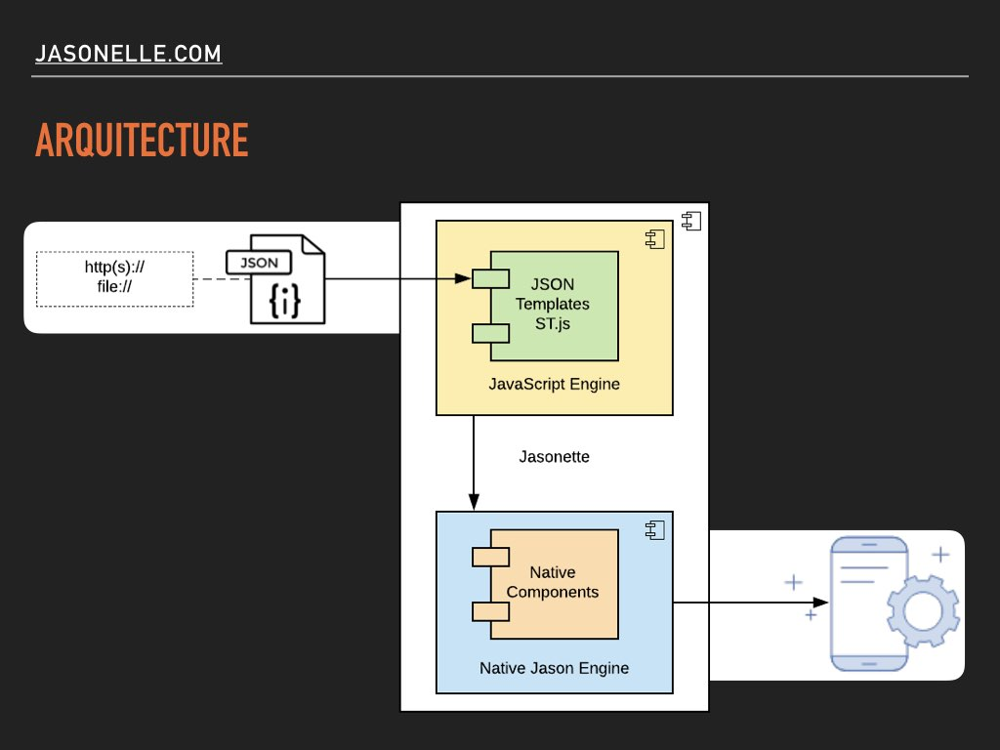
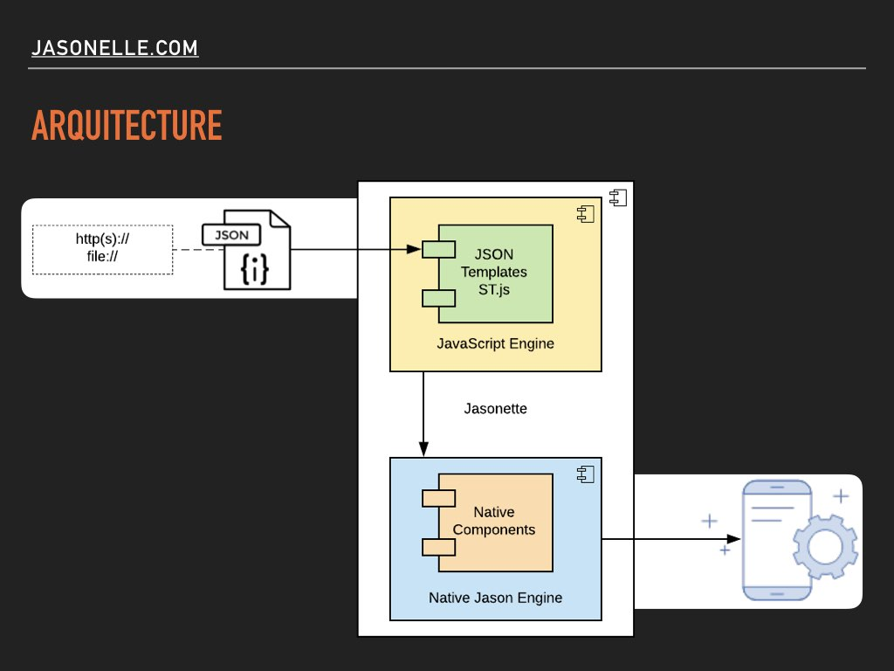
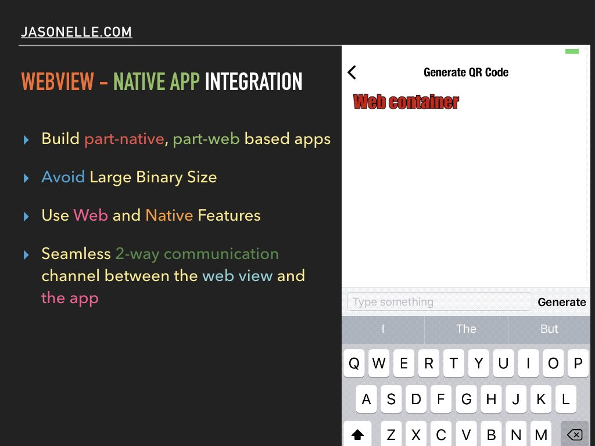
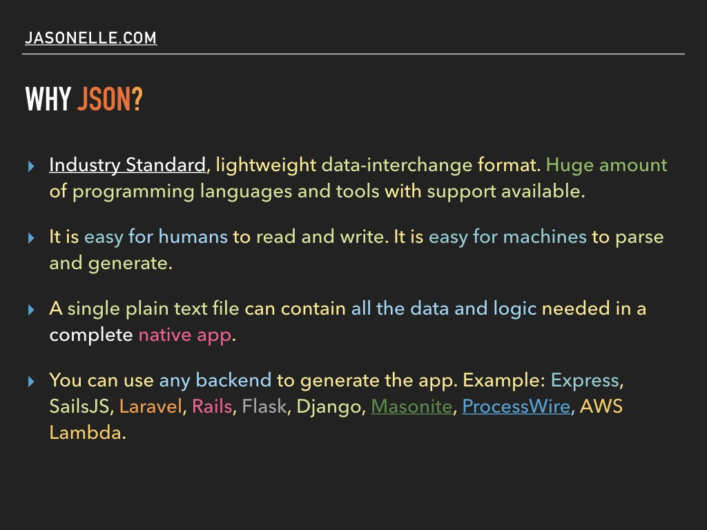
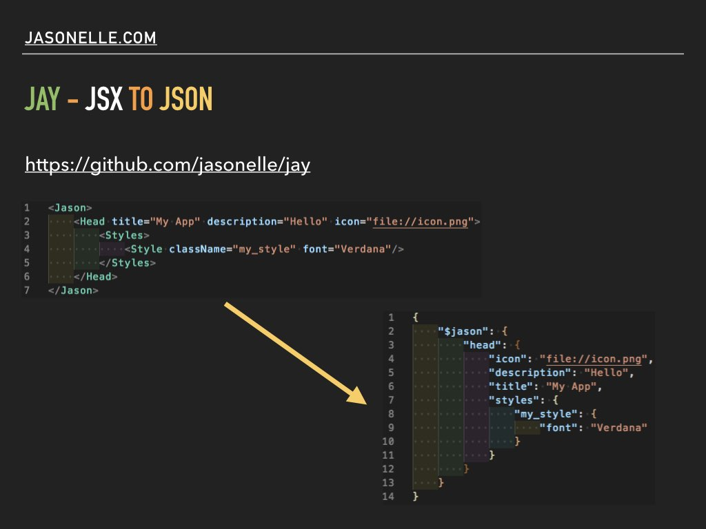
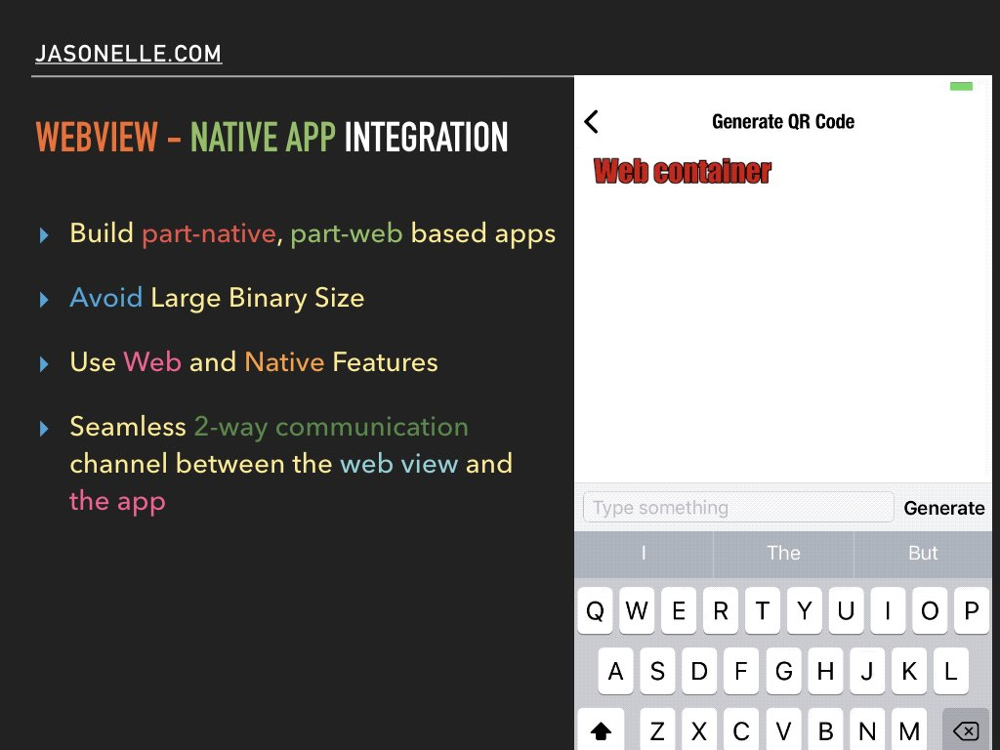
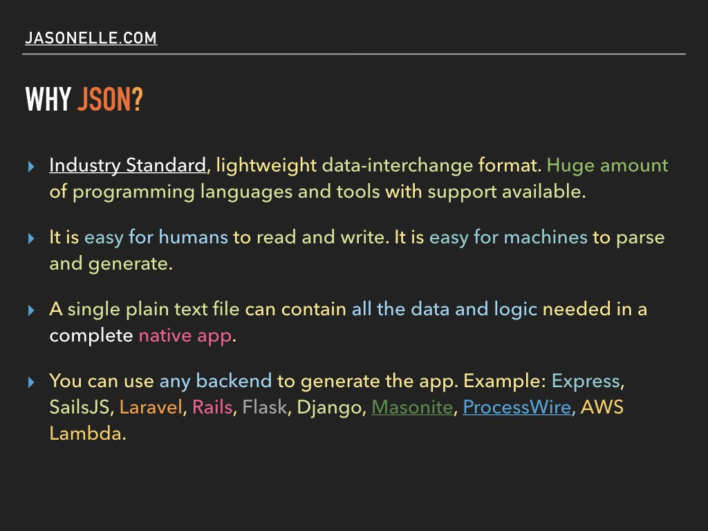
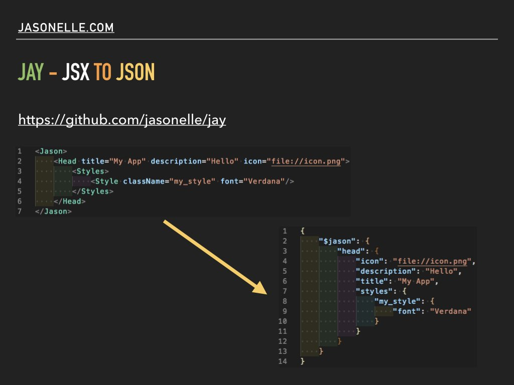

9 Discussions
Discussions and related info is dedicated to index and store links and other resources.
9.1 BeerJS - Chile - 2019
June 5th 2019, was made a presentation of Jasonelle in Santiago, Chile.
The presentation slides and related code is stored in the following repository:
https://github.com/jasonelle/beerjs

 



 




